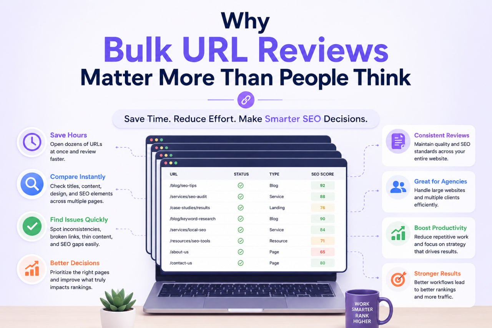

- Most people underestimate how difficult SEO becomes once a website grows beyond a few dozen pages.
- At the beginning, everything feels manageable. You publish a page, optimize a title, adjust a heading, and manually review URLs whenever needed. But once a website starts expanding — especially for agencies handling multiple clients — the process changes completely.
- A single SEO project may include hundreds of URLs:
- This is where most inefficient workflows collapse.
- Not because SEO itself is too difficult, but because manual processes stop working at scale.
- That is why experienced SEO agencies focus heavily on systems, workflows, and operational efficiency. They understand that ranking websites consistently is not only about keyword research or backlinks. It is also about how efficiently a team can review, improve, and manage large amounts of content without creating chaos internally.
- And surprisingly, this is one of the biggest differences between beginner SEO workflows and professional agency workflows.
Service pages, blog archives, landing pages, ecommerce collections, location pages, outdated content, redirected URLs, and newly published articles waiting for review.
Large Website SEO Is Mostly About Structure
When people imagine SEO audits, they often think about tools generating reports automatically.
But in reality, experienced agencies spend a huge amount of time reviewing pages manually.
Why?Because tools can detect technical problems, but they cannot fully understand quality, search intent, user experience, or content usefulness the way humans can.
For example, an SEO tool may tell you that a page has:
- Title tag
- Meta description
- Proper heading usage
- Acceptable word count
But it cannot always determine whether the page genuinely satisfies the search intent or provides real value.
This is why manual reviews remain important even in modern SEO.
However, agencies do not approach manual reviews randomly.
Before reviewing anything, they organize website data carefully.
Instead of opening URLs one by one in no particular order, they separate pages into categories and workflows. Blog pages are reviewed together. Service pages are grouped separately. Priority landing pages receive extra attention. Pages with declining traffic are isolated for analysis.
This structure matters more than many people realize.
When similar pages are reviewed together, patterns become easier to identify:
- Weak headlines
- Duplicate formatting
- Poor internal linking
- Thin content
- Outdated layouts
- Inconsistent messaging
Without organization, large-scale SEO work quickly becomes messy and exhausting.
Agencies Avoid Repetitive SEO Work Wherever Possible
One thing professional SEO teams understand very well is that repetitive manual work destroys productivity.
Opening pages individually may not seem like a problem at first. But when an agency reviews hundreds of URLs every week, even small inefficiencies become expensive over time.
This is why experienced teams constantly simplify their workflows.
- They reduce unnecessary clicks
- They group similar tasks
- They review pages in batches instead of isolated sessions
A beginner may open one page, analyze it, go back, open another page, and repeat the process for hours.
An experienced workflow looks completely different.
SEO teams often review multiple pages simultaneously to compare layouts, analyze content consistency, inspect internal linking structures, or validate publishing quality across large sections of a website.
This becomes especially important during:
- Content audits
- Site migrations
- Internal linking reviews
- Competitor analysis
- Quality-control checks before publishing
The goal is not speed alone.
The goal is reducing friction so more attention can be spent on meaningful SEO decisions instead of repetitive browser actions.
That difference may sound small, but over months of work, it becomes massive.
Why Bulk URL Reviews Matter More Than People Think

Many SEO tasks require rapid page comparison.
An agency may need to check quickly:
- Whether titles follow the same structure.
- Whether service pages maintain consistent branding.
- Whether recently updated content matches search intent.
- Whether a publishing team introduced formatting problems across multiple pages.
Doing this manually one URL at a time becomes frustrating very quickly.
This is one reason workflow tools quietly became important inside professional SEO environments.
Even small productivity tools can save hours when used consistently.
For example:- Many SEO professionals work directly from spreadsheets, exported crawl files, or sitemap URLs. During audits, they may need to review dozens of pages in sequence without constantly copying and manually reopening links.
That is where tools like urlbulkopener.com become genuinely useful in real workflows.
Not because they magically improve rankings.
But because they reduce operational friction.
And operational efficiency matters much more in SEO than most beginners expect.
Efficient Agencies Prioritize Before They Optimize
One of the biggest mistakes newer website owners make is trying to improve everything at once.
Professional agencies rarely work this way.
Instead, they prioritize pages based on business value and ranking opportunity.
- Pages already receiving impressions usually get reviewed first.
- Pages ranking near the first page often receive additional optimization.
- High-converting landing pages are treated differently from low-priority informational pages.
This approach is far more practical.
Improving a page already ranking at position 11 or 12 often produces results faster than trying to push a brand-new page from zero visibility.
That is why agencies spend significant time reviewing:
- Click-through rates
- Search intent alignment
- Content freshness
- Internal linking opportunities
- Page quality improvements on URLs already showing ranking potential
This creates momentum.
And momentum matters heavily in SEO growth.
Modern SEO Content Reviews Are Much More Human-Focused
A few years ago, many websites ranked simply by publishing large amounts of keyword-focused content.
That approach no longer works consistently.
Google has become significantly better at identifying low-value, repetitive, or overly generic articles.
Because of this, professional SEO agencies now focus much more on usefulness and experience.
When reviewing content, they are not only checking keywords anymore.
They evaluate whether the article:
- Actually answers the query
- Feels trustworthy
- Explains concepts clearly
- Provides useful structure
- Keeps users engaged long enough to satisfy intent
This is why experienced SEO content often feels calmer, clearer, and more practical.
Not overloaded with robotic optimization.
Not written purely for search engines.
Good SEO writing today usually performs well because it genuinely helps readers understand or solve something.
That is a major shift many low-quality websites still fail to understand.
Internal Linking Reviews Become Critical on Large Websites
As websites expand, internal linking problems quietly grow in the background.
- Pages become disconnected.
- Important articles stop receiving visibility.
- Some sections become overlinked while others remain isolated.
Large websites can slowly lose structure without regular review.
This is why agencies often dedicate specific review sessions only for internal linking analysis.
Not because internal links are glamorous.
But because they directly affect:
- Crawl efficiency
- Topic relationships
- Page authority flow
- User navigation
And once a website reaches hundreds of URLs, reviewing these relationships manually becomes difficult without an organized workflow.
Professional teams, therefore, build systems around content relationships instead of handling links randomly.
That structured approach is one of the hidden reasons strong websites maintain authority over time.
The Real Advantage Agencies Have
Many people think agencies succeed because they have secret SEO techniques.
Usually, the truth is much simpler.
The strongest agencies simply operate more consistently.
- They use repeatable systems.
- They reduce unnecessary friction.
- They prioritize effectively.
- They review websites in a structured way instead of relying on random effort.
That consistency compounds over time.
A chaotic workflow creates inconsistent SEO.
A structured workflow creates scalable SEO.
And once websites become large enough, scalability matters just as much as optimization itself.
Final Thoughts
Reviewing large website lists efficiently is not about rushing through SEO tasks.
It is about building workflows that allow better decisions to happen consistently without wasting energy on repetitive manual actions.
That is exactly why experienced SEO agencies spend so much time improving operational processes behind the scenes.
Because when workflows improve:
- Audits become cleaner
- Content reviews become faster
- Internal linking becomes easier
- Teams can focus more attention on strategy instead of repetition
For growing websites, that difference becomes extremely important over time.
And often, the websites that scale successfully are not the ones doing the most SEO work.
They are the ones doing SEO work more efficiently.